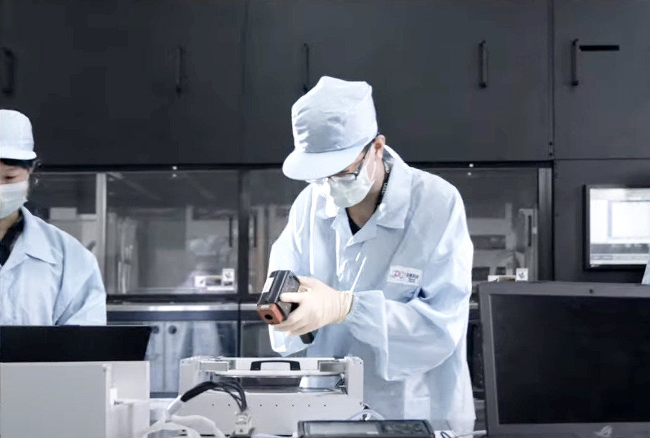

和淞科技股份有限公司成立於 1996 年 7 月，憑著多年深耕於半導體產業的經驗，於 2008 年在本業外成立「醫療材料開發與製造事業處」(下稱”醫材事業處”)，並開始持續透過與學界交流合作，掌握各項先進技術，包括：一、「電漿表面陶瓷鍍膜技術」: 應用於鑄造件與鍛造件之輕金屬表面陶瓷化處理，以提升材料機械與散熱性質；二、「表面處理技術」：應用於導體與非導體材料，強化材料的物性與化學耐受性，增加材料的應用空間與耐用年限；以及三、「非矽基 LIGA-like 微機電技術」：應用微米等級精密零件的開發製造，尤其專注於醫療用微孔霧化模組的研發與生產。並於2017年成功運用表面處理技術與微機電技術，開發出鍍鈀合金噴霧片，大幅提升霧化模組的使用壽命及耐蝕性。
